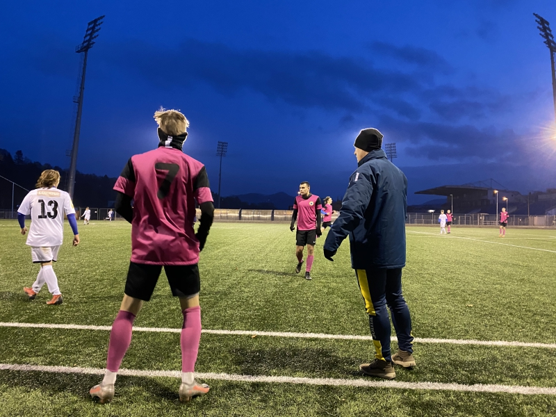

Facebook
Facebook
 Instagram
Instagram
 KIS
KIS
 Youtube
Youtube

Matěj Vrzák krátce zhodnotil první kolo Korona Cupu
MLÁDEŽ / VČERA

Litoměřicko porazilo lídra krajského přeboru
A-TÝM / 4. 4. 2021Tabulka KP Muži
| 1. | TJ Sokol Srbice | 11 | 130:117 | 19 | |
| 2. | FK Slavoj Žatec | 8 | 16:11 | 18 | |
| 3. | SK Brná | 8 | 17:16 | 15 | |
| 4. | TJ Sokol Domoušice | 8 | 14:13 | 15 | |
| 5. | SK STAP-TRATEC Vilémov | 8 | 20:10 | 14 | |
| 6. | FK Jílové | 8 | 15:13 | 14 | |
| 7. |
|
FK Jiskra Modrá | 8 | 21:18 | 13 |
| 8. | FK Litoměřicko | 8 | 16:12 | 12 | |
| 9. | TJ Krupka | 8 | 17:23 | 11 | |
| 10. |
|
SK Baník Modlany | 7 | 15:18 | 10 |
| 11. | TJ Oldřichov | 8 | 16:14 | 9 | |
| 12. | TJ Spartak Perštejn | 8 | 11:17 | 9 | |
| 13. | TJ Sokol Horní Jiřetín | 7 | 6:7 | 8 | |
| 14. | FK Tatran Kadaň | 7 | 7:10 | 8 | |
| 15. | ASK Lovosice | 7 | 7:31 | 6 | |
| 16. | FK Baník Most-Souš | 8 | 8:16 | 5 |
|
Tomáš MATĚJKA |
12 záp. | 13 gólů |
|
Marek ZÁKRAVSKÝ |
11 záp. | 5 gólů |
|
Vladimír FLÉGL |
12 záp. | 3 góly |